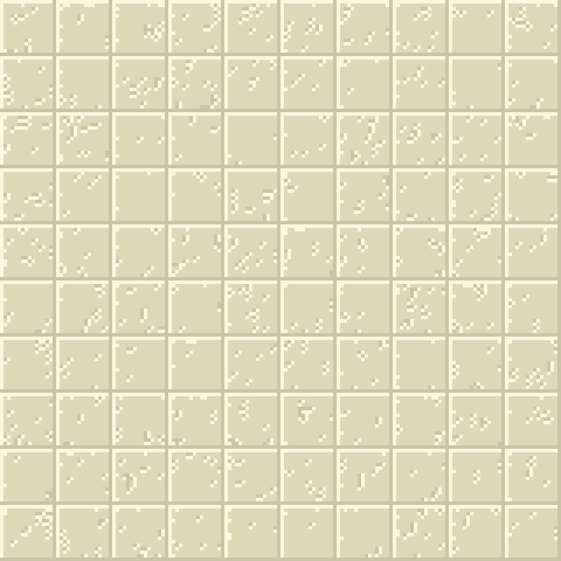
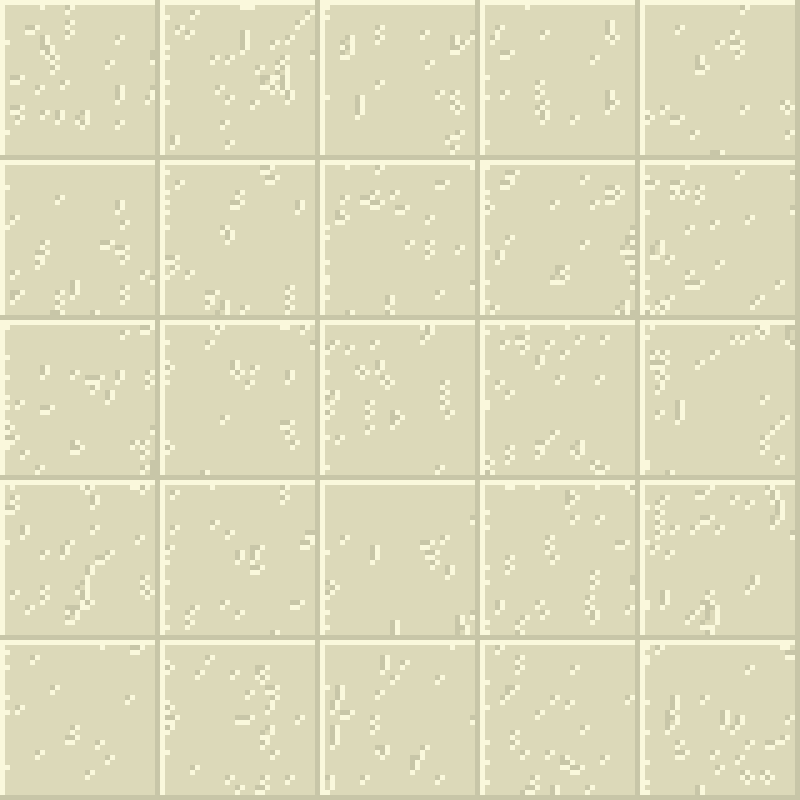
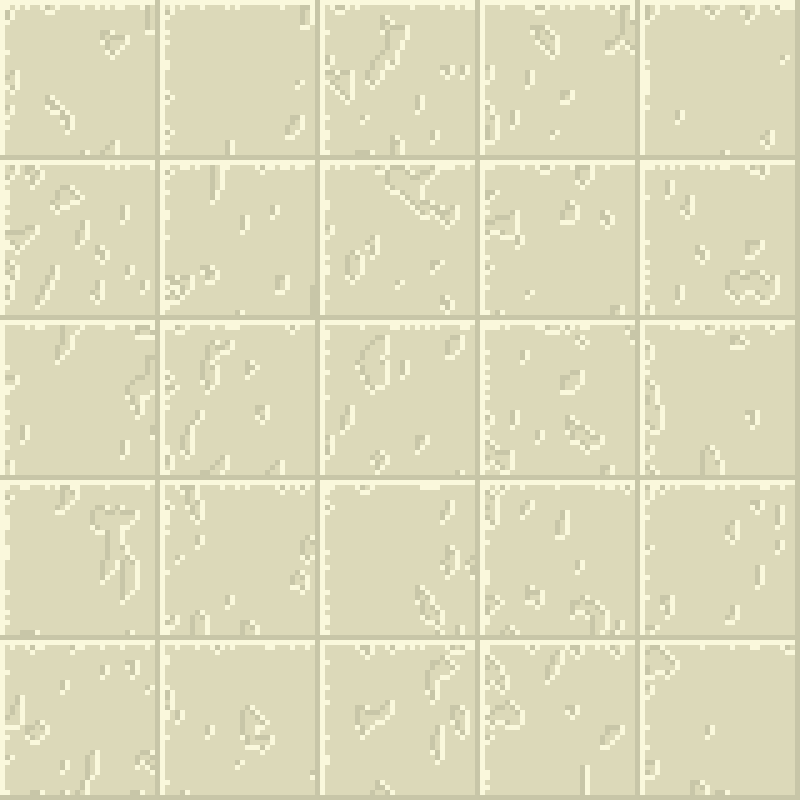

Simple Textures
Overview
This program procedurally generates pixel art damaged sandstone tiles. This was mostly created as a test to see if concepts from cellular automata could be used in a more practical environment such as procedural generation. The tiles are generated by running a custom cellular automaton on randomly generated white noise. The results of the cellar automaton are then used as a depth variable for each pixel. Simple lighting effects are then applied to better show the generated texture.
Inspiration
This project was inspired by past work I had done with cellular automata and a few projects I came across online involving procedural generation of pixel art tiles based on more conventional approaches. I was inspired to try using a cellular automata as the base for procedurally generated tiles.
Results
Below are a few tile sets generated with different settings.
  